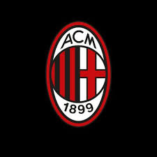

| MARCA | ESPN | AS | FOXSPORTS |
| MARCA es el mejor sitio de deportes que te brinda la mejor y más actualizada información acerca del deporte mundial, encuentra aquí resultados, goles y los protagonistas del deporte! | Fotos del Super Bowl | Una de las principales características del F. C. Barcelona es su carácter polideportivo. Se distingue de las demás instituciones deportivas por el hecho de que posee un extenso palmarés a nivel europeo, por el alto nivel de formación de sus jugadores, el potencial económico que maneja, por la calidad de los jugadores y también porque «posee una remarcable cultura del juego y del triunfo». |
 |
 |
El Inter Milano ejerce de local en el Estadio Giuseppe Meazza (también conocido por su antiguo nombre, San Siro) desde 1947, y lo comparte con el otro equipo, el AC Milan. Los colores que identifican al equipo son el negro con el azul, y han sido utilizados en los colores de su uniforme desde 1908. |
Palmarés del F.C. BARCELONA
|
|
Clasificación de la Liga Española
|
 | Sitio Web oficial del Inter de Milán |